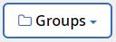

Verwalten von Sicherungen mit NetApp SaaS Backup für Office 365 Bearbeiten Sie auf GitHub Dokumentänderungen anfordern
Mitwirkende
Nachdem Sie den Einrichtungsprozess für NetApp SaaS Backup abgeschlossen haben, können Sie SaaS Backup für Office 365 verwenden, um Sicherungen von Microsoft Exchange Online, Microsoft OneDrive for Business und Microsoft SharePoint Online zu verwalten.
- Sicherungsrichtlinien
- Planen einer Sicherung oder Ändern der Sicherungshäufigkeit
- Sofortige Sicherung eines Dienstes durchführen
- Aktualisieren des Sicherungsaufbewahrungszeitraums
- Backup-Einstellungen aktualisieren
- Unterstützte Vorlagen für Microsoft SharePoint Online
- Unterstützte Apps für Microsoft SharePoint Online
Sicherungsrichtlinien
SaaS Backup für Office 365 verfügt über drei vordefinierte Stufen von Sicherungsrichtlinien. Diese Richtlinienebenen variieren in Bezug auf die Sicherungshäufigkeit und die Aufbewahrungsdauer von Daten, je nachdem, ob Sie SaaS Backup-Speicher oder BYOS verwenden.
Sie können Daten zwischen den drei Richtlinien verschieben, Sie können jedoch keine neuen Richtlinien erstellen oder die Parameter der vordefinierten Ebenen ändern.
Von Backup-Richtlinien für SaaS Backup bereitgestellte Speicher
| Sicherungsrichtlinie | Sicherungshäufigkeit | Standard-Datenaufbewahrungszeitraum |
|---|---|---|
Tier 1 | Einmal alle 12 Stunden | 3 Jahre |
Rang 2 | Einmal alle 18 Stunden | 3 Jahre |
Tier 3 | Einmal alle 24 Stunden | 3 Jahre |
Sicherungsrichtlinien für BYOS
| Sicherungsrichtlinie | Sicherungshäufigkeit | Standard-Datenaufbewahrungszeitraum |
|---|---|---|
Tier 1 | Einmal alle 12 Stunden | Für immer |
Rang 2 | Einmal alle 18 Stunden | Für immer |
Tier 3 | Einmal alle 24 Stunden | Für immer |
Planen einer Sicherung oder Ändern der Sicherungshäufigkeit
Sie können Ihre ungeschützten Daten sichern, indem Sie sie einer Sicherungsrichtlinie zuweisen. Wenn einer Sicherungsrichtlinie ungeschützte Daten zugewiesen werden, werden diese in den Status PENDING versetzt, bis die nächste geplante Sicherung für die zugewiesene Richtlinie erfolgt. Anschließend werden sie in den Status PROTECTED versetzt .
Wenn Sie die Sicherungshäufigkeit der geschützten Daten ändern möchten, können Sie die Daten einer anderen Sicherungsrichtlinienebene zuordnen.
Klicken Sie im Dashboard auf die Nummer über PROTECTED oder UNPROTECTED im Feld des Dienstes, den Sie ändern möchten.
Wenn Sie die Sicherungshäufigkeit der geschützten Daten ändern möchten, klicken Sie auf GESCHÜTZT . Wenn Sie neu entdeckte Postfächer, Sites oder MySites sichern möchten, wählen Sie UNVERFEHLT .

Wenn Sie die Sicherungsrichtlinie für gemeinsam genutzte Postfächer sichern oder ändern, klicken Sie auf die Registerkarte SHARED .
Wenn Sie die Sicherungsrichtlinie für Archivpostfächer sichern oder ändern, klicken Sie auf die Registerkarte ARCHIVE .
Wenn Sie reguläre Mailboxen sichern oder ändern, bleiben Sie auf der Registerkarte USER .Wählen Sie die Elemente aus, die Sie sichern möchten.
Klicken Sie auf das Menü Gruppen .
Wählen Sie die neue Richtlinienebene für die Sicherung aus.
Hinweis : Microsoft Office 365-Gruppen und Archivpostfächer können nur in die Richtlinie der Stufe 3 verschoben werden.Klicken Sie auf Übernehmen .
Sofortige Sicherung eines Dienstes durchführen
Bei Bedarf können Sie eine sofortige Sicherung aller Microsoft Office 365-Dienste durchführen.
Klicken Sie im Dashboard auf die Nummer oberhalb von PROTECTED im Feld des Dienstes, für den Sie eine sofortige Sicherung durchführen möchten.
Wenn Sie freigegebene Postfächer sichern , klicken Sie auf die Registerkarte SHARED .
Wenn Sie Archivpostfächer sichern, klicken Sie auf die Registerkarte ARCHIVE .
Wenn Sie reguläre Mailboxen sichern, bleiben Sie auf der Registerkarte USER .Wählen Sie die Elemente aus, die Sie sichern möchten.
Klicken Sie auf Jetzt sichern .

In einer Meldung wird angezeigt, dass die ausgewählten Services zur Sicherung in die Jobwarteschlange gestellt werden.Klicken Sie auf Bestätigen .
In einer Meldung wird angezeigt, dass der Sicherungsjob erstellt wurde.Klicken Sie auf Jobfortschritt anzeigen , um den Fortschritt der Sicherung zu überwachen.
Aktualisieren des Sicherungsaufbewahrungszeitraums
Sie können den Zeitraum in Jahren, in dem Daten für einzelne Ebenen, Postfächer, Sites und MySites gespeichert werden, auf 7 Jahre, 10 Jahre oder für immer aktualisieren. Wenn alle Sicherungsstufen den gleichen Aufbewahrungszeitraum haben, können Sie ein globales Update durchführen, um gleichzeitig den Aufbewahrungszeitraum für alle Mandanten zu ändern.
Aktualisieren des Sicherungsaufbewahrungszeitraums für eine bestimmte Schicht
Klicken Sie im Dashboard auf einen beliebigen Dienst.
Klicken Sie unter Sicherungsrichtlinien auf das Dropdown-Menü neben RETENTION PERIOD für die Schicht, die Sie ändern möchten.
Wählen Sie aus der vordefinierten Liste den gewünschten Aufbewahrungszeitraum aus.
Klicken Sie auf UPDATE RETENTION PERIOD .
Aktualisieren des Sicherungsaufbewahrungszeitraums für Mandanten
Klicken Sie auf das Konfigurationssymbol
 neben Ihrer SaaS Backup-Benutzer-ID in der oberen linken Ecke.
neben Ihrer SaaS Backup-Benutzer-ID in der oberen linken Ecke. Klicken Sie auf Kontoeinstellungen .
Klicken Sie auf RETAIN AND PURGE .
Führen Sie folgende Schritte aus, um die Datenaufbewahrungsrichtlinie für einen bestimmten Benutzer in einem bestimmten Dienst zu aktualisieren:
Klicken Sie unter Data Retention Policies auf das Dropdown-Menü neben RETENTION PERIOD und wählen Sie den gewünschten Zeitraum aus der Liste der voreingestellten Zeiten aus.
Klicken Sie auf das Dropdown - Menü neben TYPE OF SERVICE und wählen Sie den Service , den Sie aktualisieren.
Beginnen Sie im Suchfeld mit der Eingabe des Benutzers, der Site oder der MySite, die Sie aktualisieren möchten.
Wählen Sie aus den übereinstimmenden Ergebnissen den gewünschten Benutzer, die Site oder MySite aus.
Klicken
 .
. Suchen Sie nach einzelnen Postfächern, Sites oder MySites, und fügen Sie sie nach Bedarf hinzu.
Klicken Sie auf Speichern .
Die einzelnen Postfächer, Sites oder MySites, die Sie ausgewählt haben, werden auf den ausgewählten Aufbewahrungszeitraum aktualisiert.
Führen Sie folgende Schritte aus, um die Datenaufbewahrungsrichtlinie auf Mandantenebene zu aktualisieren:
Unter Tenant Ebene Datenaufbewahrungsrichtlinien, klicken Sie auf den voreingestellten Zeiten Dropdown - Menü neben Aufbewahrungszeitraum und wählen Sie den Zeitraum , den Sie aus der Liste auswählen.
Klicken Sie auf Speichern .
Alle Sicherungsrichtlinienebenen werden auf den von Ihnen ausgewählten Aufbewahrungszeitraum aktualisiert.
Backup-Einstellungen aktualisieren
Sie können Ihre Sicherungseinstellungen aktualisieren, um verschiedene Sicherungsoptionen zu steuern. Die verfügbaren Sicherungseinstellungen variieren je nach Service.
| Backup-Einstellung | Beschreibung | aktiviert | Verfügbar in… |
|---|---|---|---|
Automatische Synchronisation | Ermöglicht die automatische zeitgesteuerte Synchronisierung neu hinzugefügter oder gelöschter Benutzer, OneDrives oder Websitesammlungen alle 24 Stunden. | Standardmäßig | Microsoft Exchange Online |
Aktivieren Sie die Wiederherstellung wiederherstellbarer Elemente | Ermöglicht dem Benutzer, wiederherstellbare Microsoft Exchange-Elemente wiederherzustellen | Manuell | Microsoft Exchange Online |
Aktivieren Sie die Sicherung wiederherstellbarer Elemente | Aktiviert die Sicherung von wiederherstellbaren Microsoft Exchange-Elementen. Nur die Sicherungsrichtlinie der Stufe 1 ermöglicht die Sicherung wiederherstellbarer Elemente. | Manuell | Microsoft Exchange Online |
Workflows einschließen | Schließt Workflows in die Sicherung ein | Manuell | Microsoft SharePoint Online |
Listenansichten einschließen | Schließt die Ansicht der Liste in die Sicherung ein | Manuell | Microsoft SharePoint Online |
Versionsgeschichte einschließen | Ermöglicht die Verwaltung mehrerer Dateiversionen in der Sicherung. | Standardmäßig | Microsoft SharePoint Online |
Anzahl der Versionen | Legt die Anzahl der zu wartenden Sicherungsdateiversionen fest. | Standardmäßig auf 20 eingestellt | Microsoft SharePoint Online |
Klicken Sie im linken Navigationsbereich auf Dienste .
Klicken Sie auf Microsoft Office 365.
Klicken Sie unter Dienste verwalten auf das Symbol für die Sicherungseinstellungen
 neben dem Dienst, den Sie aktualisieren müssen.
neben dem Dienst, den Sie aktualisieren müssen.
Eine Liste Ihrer für den ausgewählten Dienst verfügbaren Sicherungseinstellungen wird angezeigt.Wählen Sie die gewünschten Sicherungseinstellungen.
Klicken Sie auf Bestätigen .
Unterstützte Vorlagen für Microsoft SharePoint Online
Nur die folgenden Vorlagen werden für Microsoft SharePoint Online-Sicherungen unterstützt.
STS # 0 (Teamseite)
BLOG # 0 (Blogseite)
DEV # 0 (Entwicklerseite)
PROJECTSITE # 0 (Projektseite)
COMMUNITY # 0 (Community-Site)
BDR # 0 (Document Center)
COMMUNITYPORTAL # 0 (Gemeinschaftsportal)
ENTERWIKI # 0 (Enterprise WIKI)
EHS # 1 (Root Site)
EHS # 0 (Root Site)
SITEPAGEPUBLISHING # 0 (Kommunikations-Site)
GRUPPE # 0 (Gruppensite-Sammlungspräfix)
STS # 1 (Leere Site)
STS # 2 (Dokumentarbeitsbereich)
STS # 3 (moderne Teamseite)
APP # 0 (App-Vorlage)
Unterstützte Apps für Microsoft SharePoint Online
Die folgenden Apps werden für Microsoft SharePoint Online-Sicherungen unterstützt.
Benutzerdefinierte Liste
Abzeichen (Community Site)
Dokumentbibliothek
Stilbibliothek
Umfrage
Verknüpfung
Ankündigung
Kontakt
Kalender
Diskussionsforum
Fotos
Bildbibliothek
Inhaltswebparts
Listenvorlagen-Galerie
Masterseiten-Galerie
Site-Seiten
Benutzerdefinierte Liste in der Datensatzansicht
Lösungsgalerie
Themengalerie
Zusammengesetzte Blicke
Geförderte Links
Aufgaben
Beiträge (Blog-Site)
Kommentare (Blog-Site)
Community-Diskussionen (Community-Site)
Kategorien (Blog-Site)
Community-Kategorien (Community-Site)
Bericht
Wiki-Seiten
Bilder der Websitesammlung
Community-Mitglieder (Community-Site)
Fehlersuche
Bibliothek aufnehmen
Links freigeben